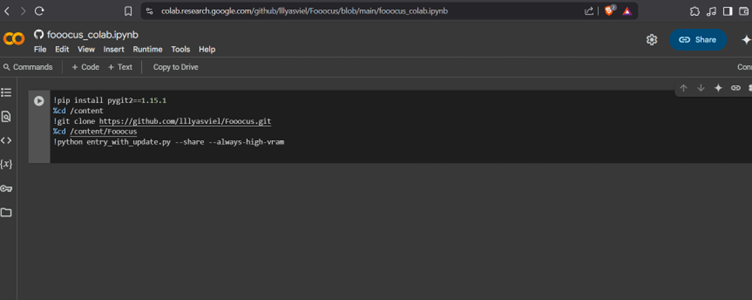

No matter how many pixels my device has or how many lenses my camera boasts, my pictures suck. So I turned to AI.
I could take a photography class. I could learn about lighting and shadows. I could experiment with built-in or third-party filters on my phone, tweak presets, or fiddle with ISO and aperture settings.
But I probably won’t. Instead, I’ll use an AI model, get the job done, and move on with my life. I’ve made peace with my failure as a photographer,and if you’re in the same boat, you should too.
For my use case, I wanted to create a professional profile picture
Unfortunately, I don't own a suit, and my complete disinterest in taking the "perfect" photo made this quest harder than expected.
So, I did what any professional Googler of things would do: I searched for a solution. The results were cluttered with promoted web apps, many of which had soft or hard paywalls. I downloaded a bunch of apps from the Google Play Store, only to hit the same money-grabbing barriers.
This isn’t an article bashing AI entrepreneurs trying to make a buck, just a working solution for similarly lazy (or pragmatic?) folks like me.
Eventually, I gave up… until I stumbled upon a wonderful GitHub repo by Lyumin Zhang called Fooocus.
I don’t enjoy taking photos. No matter how many pixels my device has or how many lenses my camera boasts, my pictures suck.
I could take a photography class. I could learn about lighting and shadows. I could experiment with built-in or third-party filters on my phone, tweak presets, or fiddle with ISO and aperture settings.
But I probably won’t. Instead, I’ll use an AI model, get the job done, and move on with my life. I’ve made peace with my failure as a photographe, and if you’re in the same boat, you should too.
For my use case, I needed a LinkedIn profile photo: a recent, professional-looking picture of myself. After all, as Reddit’s self-proclaimed hotshots love to brag, you never know when a recruiter might slide into your DMs with your dream job offer.
Unfortunately, my lack of a suit, and my complete disinterest in taking the "perfect" photo, made this quest harder than expected.
So, I did what any professional Googler would do: I searched for a solution. The results were cluttered with promoted web apps, many of which had soft or hard paywalls. I downloaded a bunch of apps from the Google Play Store, only to hit the same money-grabbing barriers.
This isn’t an article bashing AI entrepreneurs trying to make a buck,just a working solution for similarly lazy (or pragmatic?) folks like me.
Eventually, I gave up… until I stumbled upon a wonderful GitHub repo by Lyumin Zhang called Fooocus.
You can download and run it on your computer, or utilize the Google Colab shell that is created when you run the code in the Colab browser window(Warning, you're gonna need to be signed into Google).
I’m writing this article to hopefully save you some cash you could spend elsewhere without having to share your personal payment information just to edit a photo for a social media platform you barely use.
After clicking on the silver play button,You will see a modal warning, but you can just click "Run Anyway"
Downloads of packages and other dependencies will begin and then install automatically. These resources are not stored on your local machine but in the Google Colab shell.
Click on the public instance(i.e:https:\\whatever).
You should get something similar to below
This is the base image I’ll be using to create the final image. My wife graciously took the original photo of me in front of a wall.
Now, click on the radio buttons Input Image, and Advanced.
In the Input Image section select the Inpaint or Outpaint tab. Drag and drop or select the image you want from your local directory.
Select the size of the brush.
Paint the area in the image you want the AI to ignore and not take into consideration.
In the Advanced Section, choose your desired performance level.
Select the Advanced tab, and the Developer Debug Mode.
Select the Control Tab, then click the radio button for Mixing Image Prompt and Inpaint.
Add a prompt then click generate.
My output looks a little wonky for Linkdin, but I'm lazy so it will do😜.
Hope you enjoyed the article, and if you have feedback you can reach me here.